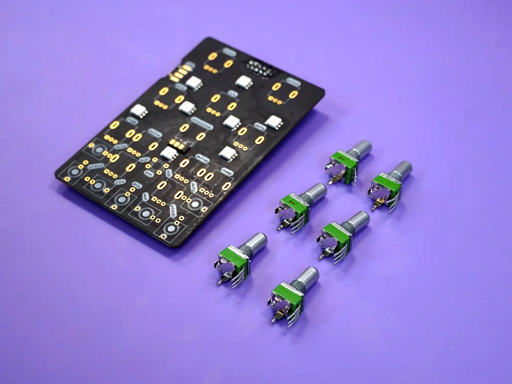
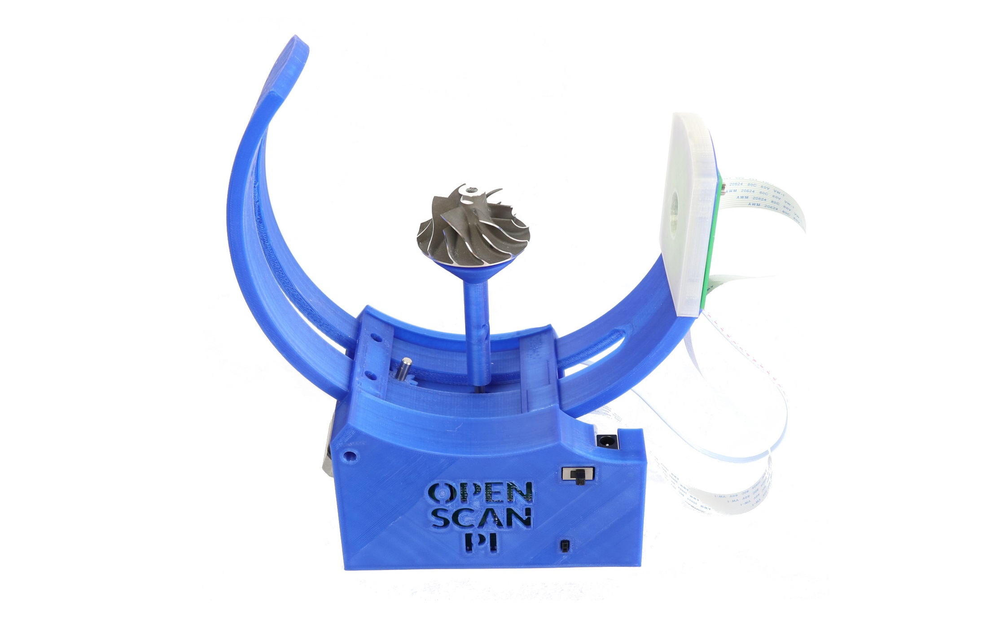
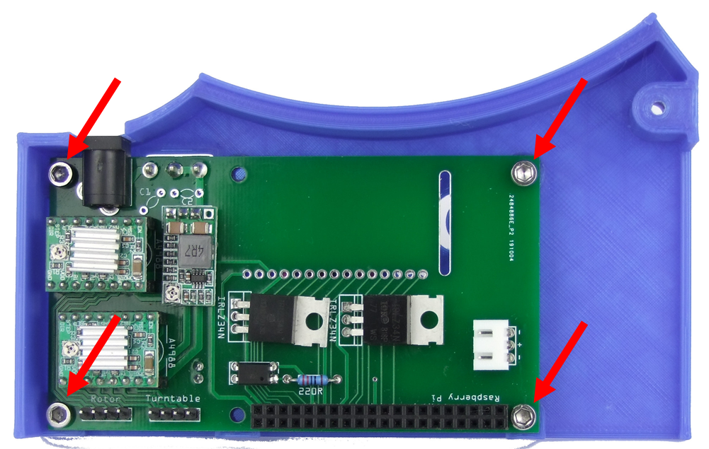
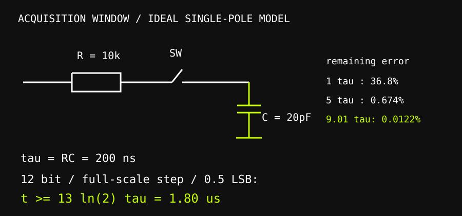
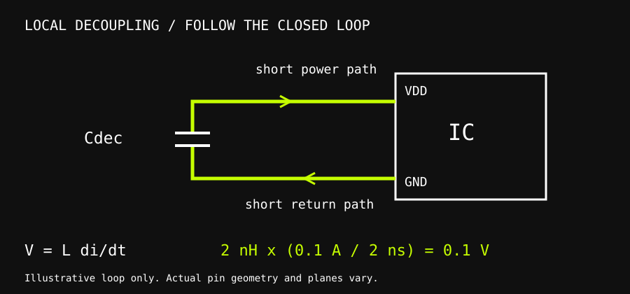
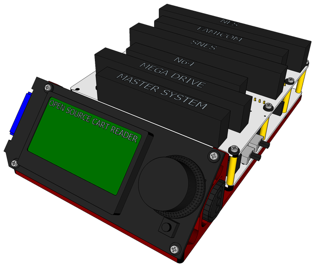
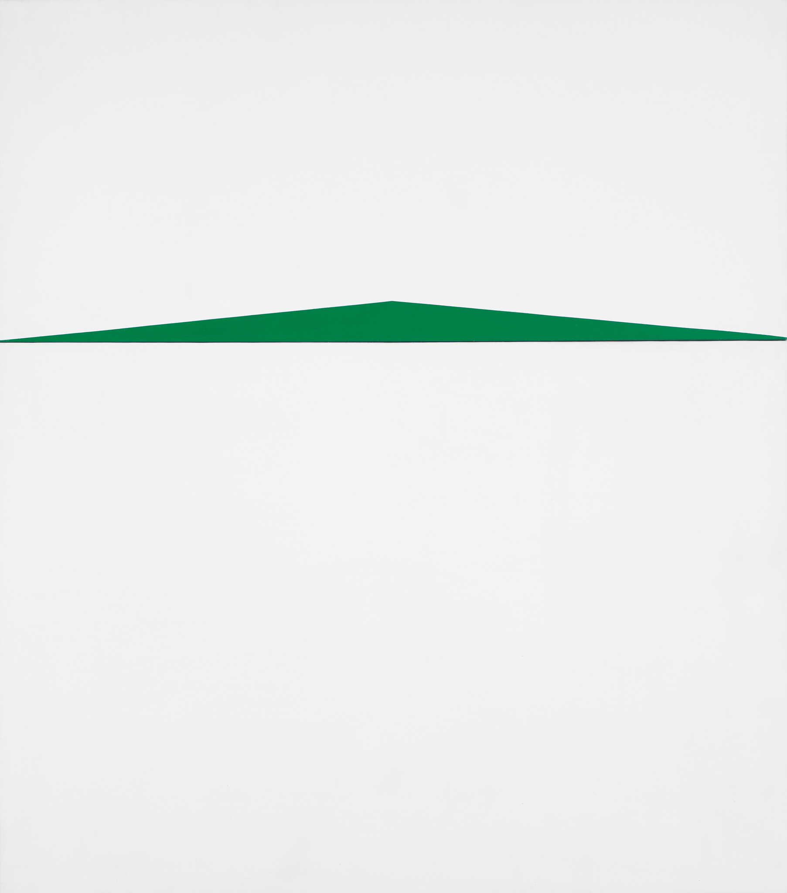
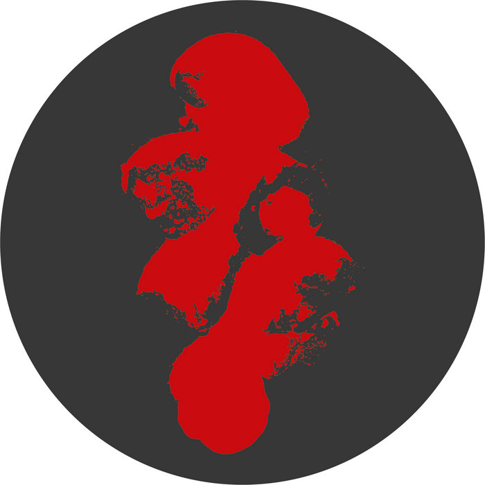
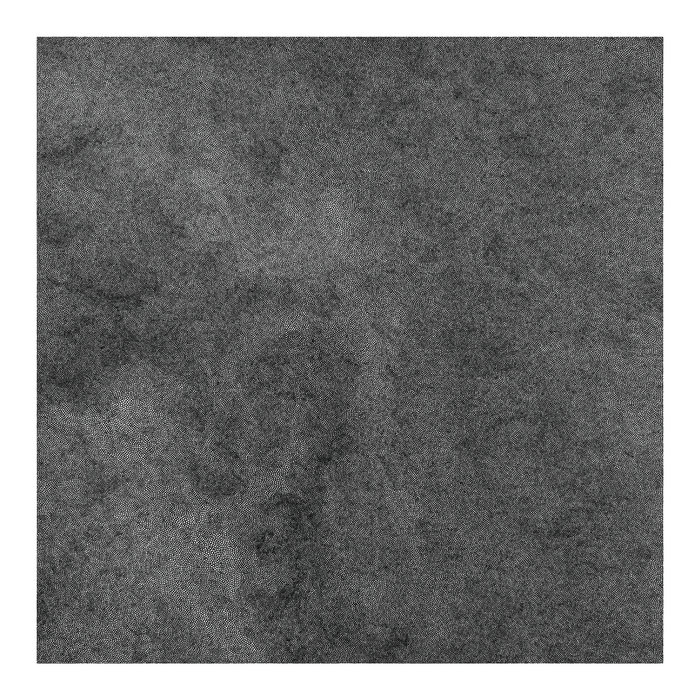
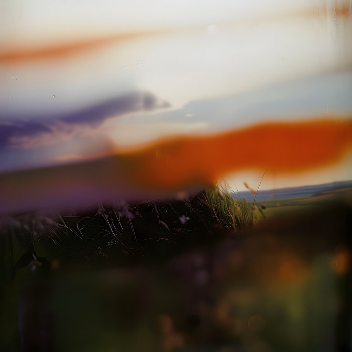

PROJECTS / KNOWLEDGE / MAKING从做成的东西，
读具体的设计决定。
数字与模拟怎样分工，拍摄装置怎样布置运动轴，工具怎样接回原工程。今天沿公开设计与作者记录展开，再看两段容易被距离和采样率掩盖的电路细节。
01 / CIRCUIT READING · 2021 项目回看音高由数字计时，
波形在模拟电路里形成。
Castor & Pollux 是 Thea Flowers 为 Winterbloom 设计的双振荡器。读它的价值，在于能从一个旋钮追到 ADC、定时器、DAC，再回到运放与电容。
这不是把音频样本送进 DAC 播放的方案。SAM D21 读取音高与脉宽控制，定时器输出目标频率的方波；模拟积分器据此生成锯齿波。MCP4728 四通道、12 位 DAC 提供两组充电速率与脉宽控制电压。DAC 在这里参与控制声源，和直接逐点输出音频承担不同任务。

作者装配指南原图 / Winterbloom，CC BY-SA 4.0。接口板与待装电位器；照片来自当前指南，电路解读依据 2021 年设计文章。一条音高控制，要同时照顾周期与斜率
TL074 被配置成积分器，电容电压逐渐爬升，复位开关周期性把它拉回。定时器决定每个周期有多长；充电控制电压则影响斜坡在这段时间里爬升多少。如果只改变复位周期，斜率保持原样，波形幅度也会跟着变。把这两条路径一起看，才容易理解为什么一个“数字控制振荡器”还要有模拟控制电压。
作者 ramp core 原理图 / Winterbloom 功能硬件设计。点击查看原始矢量图；这不是本刊绘制的仿真或实测波形。同一核心再分出两种波形：触发器将时钟二分频，产生低八度方波；比较器把锯齿波与阈值比较，得到可调占空比的脉冲。每个振荡器的三种波形都能独立输出、混合，再由 crossfader 混合两组声源。先在框图上辨认信号与控制路径，再去找对应元件，会比逐页盯着元件编号更有效。
五次修板，怎样让每一块样板多回答几个问题
作者记述成品经历五轮硬件修订。她会尽可能在已有板上换元件、飞线、修连接，把能验证的修改集中验证，再下单下一版。供电选择也有具体条件：该设计电流较小，为避开开关电源噪声使用线性稳压，同时用铜区帮助散热，并核对稳压器输出电容要求。这里值得学的是把功耗、稳定性、面积放在同一张取舍表里，而不是照抄某个料号。
继续读法：从 ramp core 追到输出放大器，再对照输入调理电路。旋钮接 ADC 与外部 CV 接 ADC，需要处理的电压范围并不一样。
Thea Flowers，2021-03-31。作者设计长文 ↗ 硬件、固件与校准脚本 ↗ 装配图解 ↗
02 / OPEN HARDWARE · MINI V1OpenScan Mini：
先把每一次拍摄安排好。
摄影测量依靠一组不同视角的照片重建物体。OpenScan Mini 把相机、灯光与两个运动轴装进可打印的机架，让采集步骤可以重复。

OpenScan Mini V1 整机 / OpenScan 官方装配文档。重建精度随物体、光照与处理流程变化，本刊未扫描或测量。这版物料表包括 Raspberry Pi 3B+ 或 4、Pi Shield、两台 NEMA17 步进电机、环灯与相机模块。一台电机驱动小转台，另一台驱动较大的转子。可选 IMX519、Pi Camera v2 或 v1.3，但安装垫件与螺丝组合不同；不能看到“支持某相机”，就跳过对应装配章节。

Pi Shield 装配原图 / OpenScan。控制板安装在前面板内侧。装配顺序里，有布线约束。
相机排线要穿过机架指定槽位，文档提醒避免锐折；镜头需居中，不能在对焦运动时碰到环灯 PCB 边缘。转子也要先确认能自由转动，必要时处理打印面的摩擦。这些机械条件，固件无法代替。
偏振模块用两片相互垂直的线偏振膜削弱直接反射。它改善采集条件，不等于任何透明、光亮物体都会自动变得容易重建。先选表面纹理清楚的小物件，再读完整拍摄与重建指南。
适合借鉴的工程方法：把运动机构、成像、照明和计算处理分开排查。先确认照片是否清晰、视角是否覆盖完整，再讨论重建软件。
选读 Mini V1 文档，没有将作者精度声明写成本刊测量。完整物料与装配 ↗ 打印件与设计文件 ↗
06 / ANALOG NOTEADC 的采样率之外，
还要问它有多久可以充电。
许多 SAR ADC 输入端是开关与采样电容。采集窗口打开后，信号源要把电容充到足够接近输入的电压。源阻抗过大，即使信号频率不高，也可能在窗口关闭时留下建立误差；多路复用切换到相差很大的下一通道时尤其值得注意。

本刊原创理想单极点模型。R／C 为解释用假设值，不是任何具体 ADC 的内部参数。用满量程阶跃、单一 RC 模型估算，剩余误差是 e−t/RC。12 位达到半 LSB，需要 t ≥ 13 ln(2)RC ≈ 9.01RC。若总等效 R 为 10 kΩ、C 为 20 pF，时间常数为 200 ns，所需时间约 1.80 μs。这个例子说明：只算一个 RC 时间常数远远不够。
真实前端还包括运放建立、开关电阻、电荷回冲和外部 RC。Analog Devices 的 Alan Walsh 将放大器与滤波器一起讨论：外部电容可分担瞬时电荷，但也会改变驱动负载。读自己的器件手册时，找采集时间和输入驱动要求，再考虑延长窗口、降低源阻抗或增加合适的缓冲；不能把这个理想算式当作所有 ADC 的配方。
Alan Walsh：SAR ADC 前端放大器与 RC 设计 ↗
07 / PCB NOTE去耦电容离芯片近，
还得让电流有近路回来。
只量电容到 VDD 引脚的直线距离，会漏掉另一半路径。局部瞬态电流从电容到供电脚，经芯片返回地，再回到电容；完整回路的寄生电感决定电流快速变化时会附带多大的电压扰动。

本刊原创回路示意，绿色表示解释用局部路径；不对应实际板层或制造尺寸。一个量级例子：V=L·di/dt。若回路寄生为 2 nH，电流在 2 ns 内变化 0.1 A，对应 0.1 V 的电感电压。数值是理想示例，目的在于解释为什么走线、过孔和电容本体的 ESL 都可能进入问题。
TI 的 TAS2xxx 布局指南把供电脚到电容、电容自身、电容回地脚三段一起列入考量，并建议在电容焊盘附近安排地过孔。看布局时可沿闭合路径逐段追踪：是否绕行、地平面是否完整、回流是否被迫走远。文档中的距离要求针对该器件系列；更值得迁移到其他板子上的，是检查完整回路的方法。
TI SLAA896：TAS2xxx 布局指南，第 2.3 节 ↗
08 / BUILD LOG & SOURCE卡带读取器：选了哪块板，
就要编进对应的固件。

OSCR HW5 项目原图 / sanni 与社区贡献者。不同硬件代际的接线和模块不能混用。Open Source Cartridge Reader 把 ROM 与存档读到 SD 卡，可以脱离电脑独立操作。它的吸引力是公开的卡槽、适配器与各平台代码；制作难点则是“支持很多系统”的固件，必须落到你手里那一版硬件上。
Config.h 单独列出 HW1–HW5 等板型、时钟模块、自动电压选择模块，以及各游戏平台开关。注释说明：启用电压选择功能要以实际装有 VSELECT 模块为前提；打开过多模块可能导致空白屏或停在提示信息。把未安装的硬件能力编进去，并不会让硬件自动出现。
还要注意迁移状态：旧仓库已归档并指向 oscartreader，但新固件 README 自称高度实验、主要面向测试与开发，并仍建议多数用户使用旧固件。选板时同时保存硬件代际、物料、固件来源与配置，比只收藏一个“最新下载”更可靠。若要学习底层实现，可先选一个平台，沿菜单入口追到读总线和写 SD 卡的流程。
核查于 2026-11-19。旧工程与制作资料 ↗ 配置文件 ↗ 新固件状态说明 ↗
09 / CULTURE · PAINTING绿色三角形的下沿，
也是两块画布相遇的地方。

Carmen Herrera，《Blanco y Verde》，1959，丙烯画布，173 × 153.7 cm。Whitney Museum of American Art，2014.63。© Carmen Herrera; courtesy Lisson Gallery, London。CARMEN HERRERA / BLANCO Y VERDE / 1959
色块的边界，
同时是作品的结构。
ACRYLIC ON CANVAS · WHITNEY 2014.63
画面被压缩到白色与一条细长的绿色三角形，但它不是一张平面色块示意图。馆方策展人 Dana Miller 的 1959 年作品讲解指出：作品由两块画布组成，接缝位于绿色三角形的下沿。颜色、线条和画布的物理边缘在同一处工作。
可以先看绿色作为“画上去的形”，再试着把它看成从白色平面切开的空间。这个视角来自馆方对 Herrera 建筑与雕塑思考的讨论。少量颜色并没有减少决定的数量：三角形多高、接缝放哪里、白色如何延续，都会改变整个画面的张力。馆藏页还提供音频与展览记录，注意同系列不同年份的作品各有结构。
Whitney 原作、尺寸与馆方讲解 ↗
10 / RECORDS唱片 / RECORDS

Anthony Child
Beginning of the Shadow
Silver Threads / 2026-11-09
在毛伊岛录制，材料包括人声、锣、合成器与环境声音。C. Lavender 和 Elizabeth Heilman 分别参与合成器与锣；封面来自作者拍摄的当地照片。
展开 Bandcamp 试听

The Body & Cel Genesis
Whole Wide World
Thrill Jockey / 2026-11-13
电子底轨与现场鼓组先成为材料，再由合作成员共同编辑、编排。录音经过多次会期，主要在 Machines with Magnets 完成，制作由 Seth Manchester 负责。
展开 Bandcamp 试听

Grand River
Temporary
Editions Mego / eMego 320 / 预售 · 2026-11-20
八首作品围绕吉他与电子声音展开。发行页列出 Andert Tysma 的原声钢琴参与，以及 Rashad Becker 的母带；目前为预售，公开两首先行曲。
展开 Bandcamp 试听